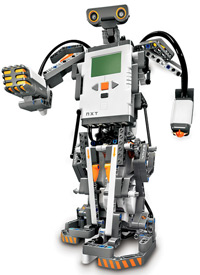
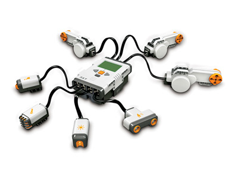
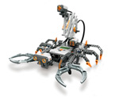
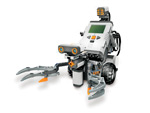
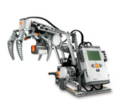

|
 |
MINDSTORMS NXT V41
Robot programmable à partir de 10 ans 250 € Le pack accumulateur compatible inclus pour 5 € Livré en 24 heures Disponible |
Apprenez à construire des robots performants!
Après de nombreuses années de service, le Robotics Invention System cède sa place au dernier-né de la gamme Mindstorms, le NXT.
Dôté d'un processeur 32 bits et de plus de mémoire, le cerveau de vos robots Lego va piloter les robots les plus fous que vous puissiez imaginer. Libre à vous de les programmer via l'USB ou sans fil, grâce au Bluetooth intégré.
Le set comprend plus de 500 pièces de Lego Technic auxquelles s'ajoutent les capteurs les plus courants du monde de la robotique:

La brique NXT, ses capteurs, ses moteursDans ce même set, un emballage séparé permet de monter son premier robot en seulement 30 minutes et de le faire fonctionner directement. Grâce aux instructions de montage fournies sur le livret et au logiciel facile d'accès, les débutants comme les experts en robotique pourront construire des véhicules, des insectes ou même des humanoïdes qui obéissent aux ordres que vous définirez.
Différente possibilité de montage:
|
 |
 |
|
 |
Le capteur de lumière du NXT peut discerner différentes couleurs et intensités lumineuses, tandis que le capteur de son peut littéralement faire danser votre robot au rythme de la musique. Le capteur de contact permet aussi bien de repérer un obstacle qu'un objet à saisir. Enfin le capteur ultrasons mesure les distances et détecte les mouvements.
Un exemple de programme Le logiciel de programmation est disponible sur Mac et PC et grâce au Bluetooth intégré, vous pourrez même piloter votre robot depuis votre téléphone portable.
Contenu de la boite
La brique NXT possède 4 ports d'entrée, 3 ports de sortie, un écran graphique, un haut-parleur miniature et se connecte à l'ordinateur via l'USB ou Bluetooth. L'interface de programmation, simple et conviviale, est fournie sous PC et Mac.
Pour les experts, les documentations système, les schémas internes, etc. sont librement diffusés sur le net. Il devient possible d'interfacer le NXT avec votre programme, d'utiliser d'autres langages ou encore de construire ses propres capteurs et actionneurs.